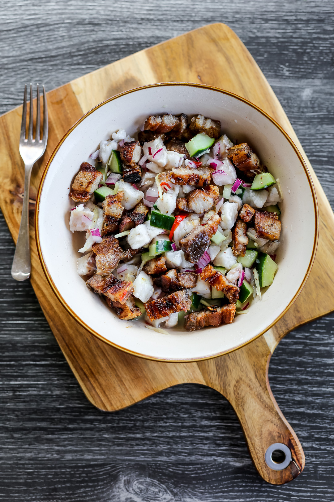
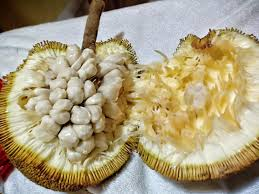

Must-Try Flavors

The Sinuglaw Experience
A perfect explosion of smoky, sour, spicy, and savory flavors in a single iconic dish.

Durian & Marang
Dive into the rich, custard-like textures of the region's most famous and polarizing tropical fruits.

Mt. Apo Coffee
Visit a local cafe to try the smooth, chocolatey notes of authentic Kapatagan Arabica.